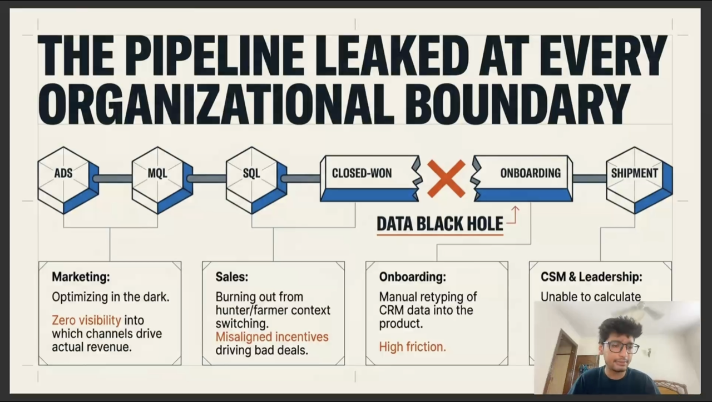

01 / CASE STUDYPRODUCT · REVENUE OPERATIONS
Building a better
revenue engine.
At Eshopbox, I connected CRM and warehouse data, rebuilt customer intelligence across 70k+ records, and helped teams focus on shipment volume rather than just acquisition.

VIEW THE CASE STUDY